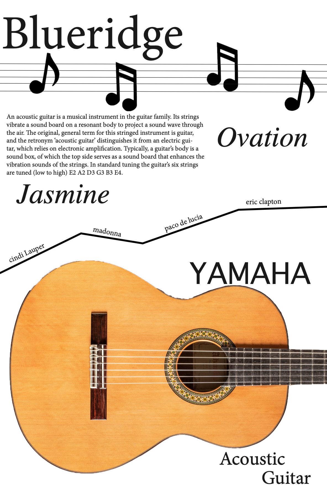

1 / 7

2 / 7


3 / 7
4 / 7

5 / 7

6 / 7

7 / 7
This was a 14 week long project from ARTG3350 Typography 2 course. The purpose of this class was to create a poster and a book to understand different aspects of typography. The main focus of the poster was to incorporate typography terms, typography definitions, and images. The objectives of the book project were to create a book to explore structures and hierarchies through typography.